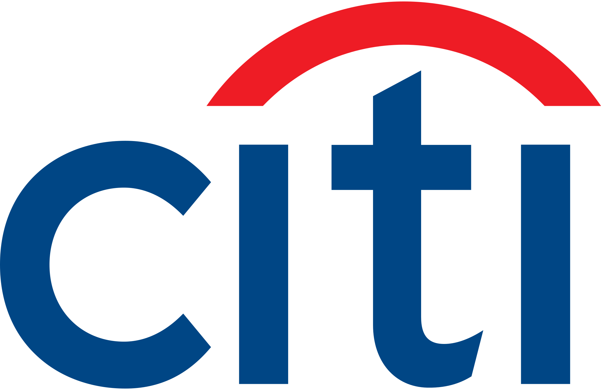
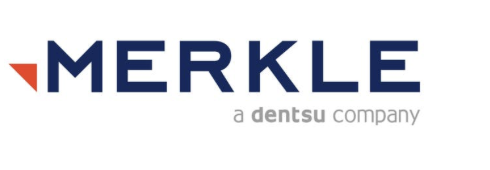

Partha Marella
Architecting enterprise AI that transforms complexity into intelligence—safely, securely, and at scale.
Who I Am
I'm a Data Scientist and GenAI Engineer who grew up in Bangalore, studied Computer Science at PES University, and went on to earn a Master's in Information Systems from Carnegie Mellon.
I specialize in building AI-powered systems that turn messy, siloed enterprise data into something people actually understand and act on — from Text-to-SQL agents to autonomous agentic pipelines.
Currently at Citi through WorldLink, while pursuing a PhD in Artificial Intelligence at the University of the Cumberlands. I care deeply about responsible AI, enterprise data governance, and building systems that earn trust.
Where I've Worked
Roles across data engineering, machine learning, and enterprise AI systems at industry-leading organizations.

Data Scientist & GenAI Engineer
Citi · via WorldLinkLeading enterprise GenAI adoption at one of the world's largest financial institutions — building AI systems that democratize access to complex data across global teams.
- Engineered a Starburst-powered Text-to-SQL agent that acts as 100 virtual analysts, reducing query creation time by 90%
- Designed persona-aware security layers enforcing role-based compliance and audit logging across all AI interactions
- Built and deployed autonomous MCP-based agentic pipelines for model evaluation, PR review, and automated dashboarding
- Implemented semantic document clustering pipelines that reduced manual metadata classification by 80%
Data Scientist
Hitachi VantaraJoined the Lumada Catalog team to implement advanced data catalog features and industry-specific semantic glossaries that accelerated enterprise adoption.
- Independently proposed and implemented a business term portability feature for the Lumada Data Catalog in record time
- Created industry-specific seed glossaries enabling rapid catalog adoption across multiple verticals
- Applied BERTopic and Top2Vec NLP models to automatically classify and cluster enterprise documents
- Evaluated and benchmarked large language models for accuracy, safety, and SQL injection resilience

2019 – 2022Software Engineer (Data)
Merkle · DentsuStarted my career building data pipelines and analytical models for global retail and marketing clients, developing foundational expertise across the full data stack.
- Ramped up COGS calculation processes for a US-based retailer, identifying cost magnitude across business functions
- Built and deployed ML models using Linear Regression, Logistic Regression, K-means and Hierarchical Clustering
- Developed topic modeling pipelines for large marketing document repositories, accelerating insight extraction
- Delivered analytics solutions in Python, R, and Advanced Excel across a cohort of client engagements
Academic & Technical Foundation
What I've Built
Interactive demos of enterprise AI systems — click, scroll, and explore how they work.
Starburst AI Agent
Enterprise data is often trapped behind siloed database partitions. I engineered a Starburst-powered SQL agent that acts as 100 virtual analysts, democratizing data accessibility while keeping strict policy enforcement.
Automates manual SQL queries, eliminating report creation backlogs.
Enables any business stakeholder to query production data in plain English.
Enforces role-based compliance and auditing per active persona.
Semantic Document Clustering
Enterprise document repositories are often a black box of unstructured reports. I engineered a pipeline that converts raw text into dense coordinate embeddings, mapping semantic relationships. As you scroll this section, watch document nodes self-organize from chaotic scatter into structured topic clusters—just like a folding phone opening into active use.
Agentic AI Pipelines
I design and deploy specialized, autonomous AI agents that handle complex engineering and analytic tasks—from automated model evaluation suites to pull request reviews and self-assembling database dashboards.
Behind the Systems
A comprehensive view of the technology stack powering my enterprise architectures.
Enterprise GenAI
Building scalable retrieval and synthesis layer architectures for metric and document queries.
Text-to-SQL
Custom LLM compilers parsing plain English into sanitised relational databases metrics.
RAG
Retrieval Augmented Generation pipelines feeding real-time context directly into LLM prompts.
Vector Databases
Storing and searching dense vector representations of high-dimensional metrics nodes.
LLM Evaluation
Strict verification criteria ensuring models do not hallucinate metrics or schemas.
AI Infrastructure
Orchestrating agent workflows and secure API services inside enterprise boundary limits.
MCP
Model Context Protocol linking client applications seamlessly to remote tool schemas.
FastAPI
Sleek, high-concurrency API service routing requests and serving AI pipeline endpoints.
Docker
Packaging AI environments into reproducible execution boundaries.
OpenShift
Kubernetes orchestration container platform hosting enterprise AI microservices.
Data Platforms
Connecting secure high-performance data lakes and warehouse engines directly to AI pipelines.
Snowflake
Cloud data warehouse structuring and storage engine for operational business details.
Starburst
Distributed query execution layer resolving data queries across partition borders.
DataHub
Self-service metadata discovery dashboard mapping active enterprise catalog schemas.
Machine Learning
Extracting semantic insights and structural features from massive records clusters.
BERTopic
Neural topic modeling parsing semantic documents and clustering topics dynamically.
Top2Vec
Jointly learning word and document embeddings to organize similar features.
Embeddings
Dense coordinate mappings representing textual semantics inside abstract model space.
Neural Networks
Deep multi-layer architectures extracting features and classifying patterns.
Outcomes, Not Features
Industry Recommendations
What engineering leaders, managers, and mentors say about my work and analytical impact.

"Partha's technical acumen consistently impressed me while he was on my team at Hitachi Vantara. Not only did he exhibit profound analytical prowess, but he also approached challenges with strong thinking, ensuring solutions were innovative and sustainable. His meticulous attention to quality combined with a deep empathy with client needs made him indispensable. Partha's dedication and his ability to transform complex data into actionable insights was impressive. Partha is an invaluable asset to any team!"
"It was a pleasure to have Partha join the Lumada Catalog team at Hitachi Vantara as an intern and implement a number of features that we have been planning to release for quite some time. With very little help from other members of the engineering team, Partha was able to propose a plan and implement a fairly involved business term portability feature of the Catalog in record time. In addition, he added a number of industry specific seed glossaries for the Catalog to help customers in different industries to quickly use the catalog in their business environments."

"Partha is a great team player. He has a keen eye for detail and is very dependable. He also understood business imperatives and derived meaningful insights from the data that had a significant business impact. As a keen learner, he identifies the problem and pitches his ideas across effectively. Overall, he is a great asset for any team to have in terms of both his technical and interpersonal skills."
"Partha is an excellent team player and has worked on cohort of interesting projects in the field of data science. His intuitive planning and commitment to deadlines has been one of the biggest asset to our team. He helped me and the team to ramp up the process COGS calculation for a US based retailer to identify the magnitude of costs incurred to the company by various functions. Partha has exemplary skills in Python, R, Advanced Excel and a variety of ML frameworks like Linear Regression, Logistic Regression, Topic Modelling, K-means, Hierarchical Clustering."
Let's build something meaningful.
Get in touch to discuss GenAI systems, enterprise metrics governance, or AI research collaboration.